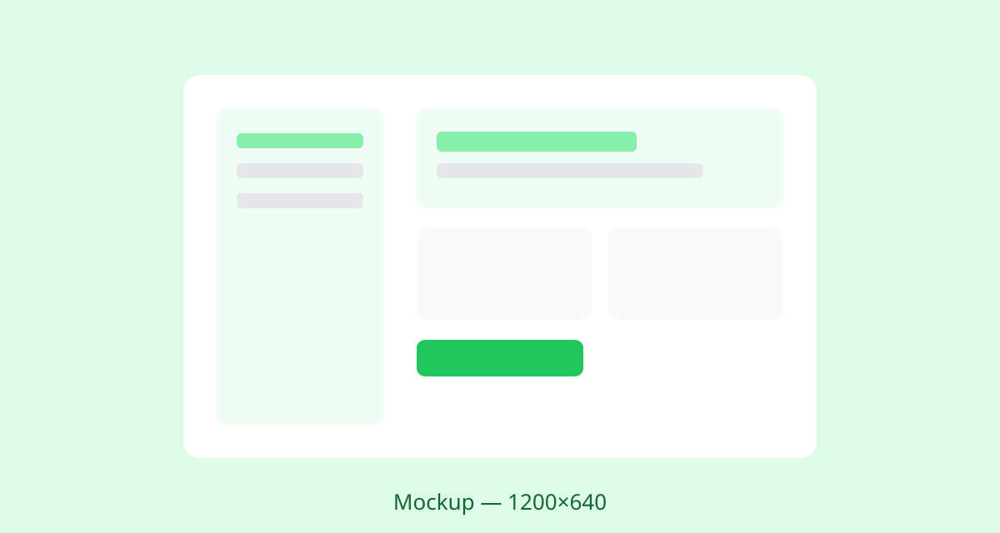
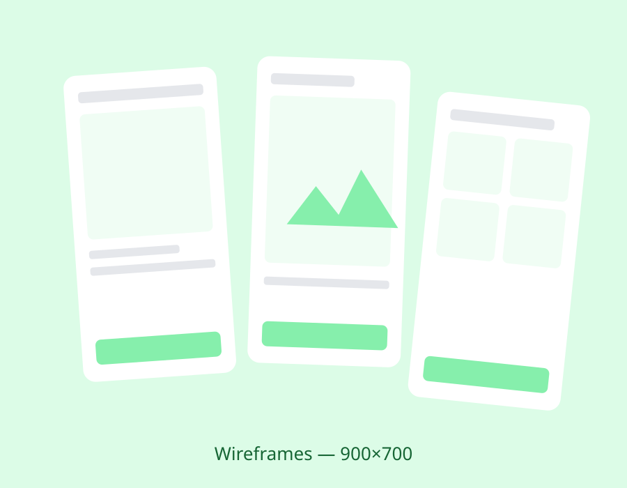
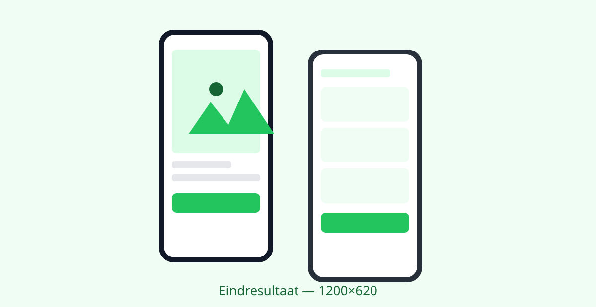

Contextueel onderzoek
Ik observeerde 12 ouderen thuis terwijl ze een echte aanvraag deden. Jargon en de angst om iets "verkeerd" te versturen bleken een groter probleem dan het lettertype.
Een herontwerp van het online portaal voor zorgvoorzieningen, gebaseerd op uitgebreid gebruikersonderzoek naar de knelpunten die ouderen ervaren bij digitale aanvragen.

Het aanvragen van een traplift, huishoudelijke hulp of vervoerspas gebeurt steeds vaker online, juist door een doelgroep voor wie digitale formulieren de grootste drempel vormen. Het bestaande portaal kende een uitval van meer dan de helft van de aanvragers, die vervolgens telefonisch of aan de balie alsnog geholpen moesten worden.
Het doel: onderzoek waar ouderen precies vastlopen in het aanvraagproces en vertaal die inzichten naar een portaal dat zelfstandig, foutloos en met vertrouwen te gebruiken is.
Ik observeerde 12 ouderen thuis terwijl ze een echte aanvraag deden. Jargon en de angst om iets "verkeerd" te versturen bleken een groter probleem dan het lettertype.
Baliemedewerkers behandelen dagelijks de gestrande aanvragen. In twee werksessies brachten we samen in kaart welke vragen steeds opnieuw tot verwarring leidden.
Drie testrondes met papieren en klikbare prototypes, telkens met vijf deelnemers uit de doelgroep. Elke ronde sneuvelden er aannames, en ook formuliervelden.
Het herontwerp draaide om een fundamenteel eenvoudiger proces: van één groot formulier naar een gesprek in kleine, begrijpelijke stappen.
Elke stap stelt precies één vraag in klare taal, met ruime klikdoelen en de mogelijkheid om altijd terug te gaan zonder gegevens te verliezen.
Een leesbaar overzicht in gewone mensentaal ("U vraagt hulp bij het huishouden aan, 2 uur per week") neemt de angst weg om iets verkeerd te versturen.

Een drastisch vereenvoudigd portaal waarin de aanvraag voelt als een geduldig gesprek in plaats van een examen.

WCAG-richtlijnen waren het startpunt, niet het eindpunt. Pas door bij mensen thuis mee te kijken zag ik drempels die geen enkele richtlijn benoemt, zoals de angst om te klikken.
Elk formulierveld dat we schrapten, verhoogde het voltooiingspercentage. De grootste winst zat in wat ik weg durfde te laten.